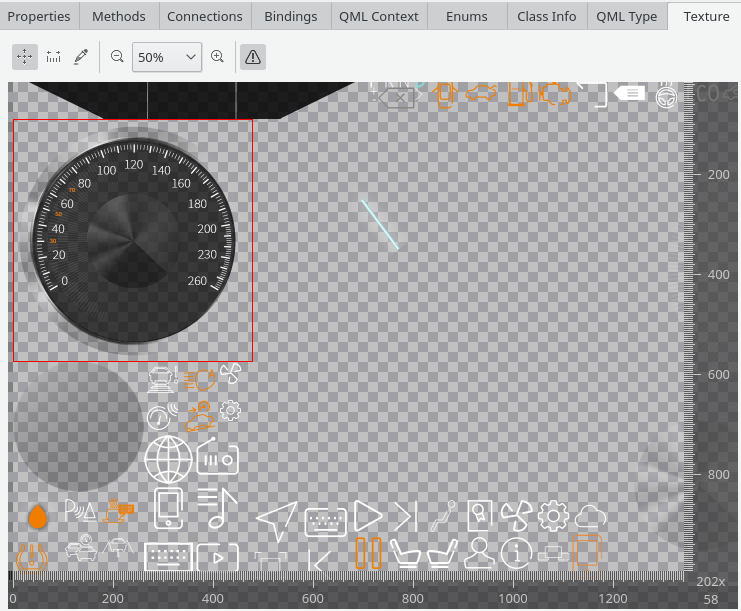

When having a scene graph node or a QQuickItem with an attached QSGTexture selected selected, the scene graph texture view shows the texture content as sent to the GPU. This can be either an Individual texture or part of a texture atlas. In particular, the following elements are supported:
This is primarily accessible via the scene graph browser in the Qt Quick 2 Inspector tool.

The texture view offers a number of generic interactions also available in other image inspection views in GammaRay, such as:
Additionally, texture-specific diagnostics are available checking for common issues such as:
If any of these issues are detected, a summary text at the bottom of the view will list the amount of memory that can be saved, and a diagnostic overlay will show the affected regions of the texture.